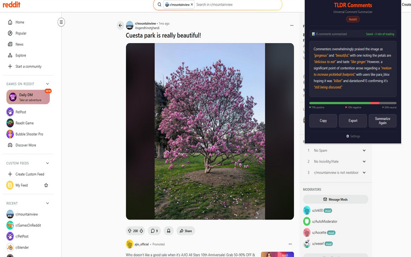

Reddit threads can have hundreds of comments. The best insights are buried deep. TLDR Comments reads them all and gives you the summary.
Add to Chrome  Summarize Reddit Comments for FreeTLDR Comments has a dedicated Reddit scraper that works on both new Reddit (reddit.com) and old Reddit (old.reddit.com). It reads all top-level and nested comments, preserving thread structure for a more accurate summary.
Just open any Reddit post, click the TLDR Comments icon, and hit Summarize. Within seconds, you'll have a concise summary of what the community is saying.

Popular Reddit threads can have thousands of comments across dozens of nested threads. The most insightful replies are often buried under jokes and tangents. TLDR Comments uses AI to extract the signal from the noise  giving you the key takeaways in seconds instead of minutes.